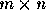

| Crosswords (II) |
A crossword can be stored as a matrix  of zeros and ones. Zero represents white squares and one represents black squares. Some squares of the crossword are numbered and assigned to these numbers are the descriptions of the words that should be written either ``across'' or ``down'' into the crossword. A square is numbered if it is a white square and either (a) the square below it is white and there is no white square immediately above, or (b) there is no white square immediately to its left and the square to its right is white. The squares are numbered from left to right, from the top line to the bottom line.
From the matrix a crossword diagram can be drawn. In the diagram each square is represented by a box characters. Black square and white squares (numbered and not numbered square) are represented as follows (where nnn is the number of the square):
++++++ ++++++ ++++++ ++++++ +nnn + + + ++++++ + + + + ++++++ ++++++ ++++++
The remaining characters of the box are spaces. If black squares are given at the edges, they should be removed from the diagram (see the example). Only use spaces as necessary filling characters. Don't use any unnecessary spaces at the end of the line.
The input file consists of several blocks of lines each representing a crossword. Each block starts with the line containing two integers m < 25 and n < 25 separated by one space. In each of the next m lines there are n numbers 0 or 1, separated by one space. The last block will be empty, m = n = 0.
The output file contains the corresponding crossword diagram for each except the last block. After each diagram there is one empty line.
6 7 1 0 0 0 0 1 1 0 0 1 0 0 0 0 0 0 0 0 1 0 0 0 1 0 0 1 1 1 0 0 0 1 0 0 0 1 0 0 0 0 0 1 5 3 1 0 1 0 0 0 1 1 1 0 0 0 1 0 1 0 0
+++++++++++++++++++++
+001 + +002 +003 +
+ + + + +
++++++++++++++++++++++++++++++++++++
+004 + ++++++005 + +006 +007 +
+ + ++++++ + + + +
++++++++++++++++++++++++++++++++++++
+008 + +009 + + +010 + +
+ + + + + + + +
+++++++++++++++++++++ +++++++++++
+ ++++++011 + +
+ ++++++ + +
++++++++++++++++++++++++++++++++++++
+012 +013 + ++++++014 +015 + +
+ + + ++++++ + + +
++++++++++++++++++++++++++++++++++++
+016 + + + + +
+ + + + + +
++++++++++++++++++++++++++
++++++
+001 +
+ +
++++++++++++++++
+002 + + +
+ + + +
++++++++++++++++
++++++++++++++++
+003 +004 + +
+ + + +
++++++++++++++++
+ +
+ +
++++++